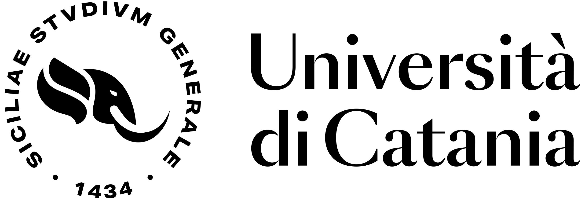
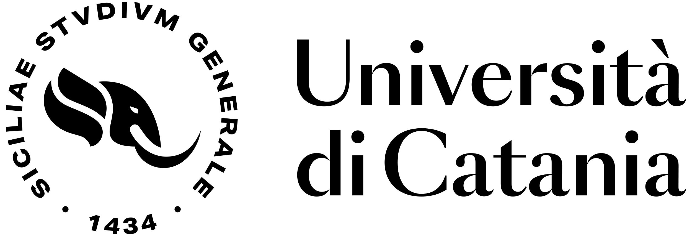
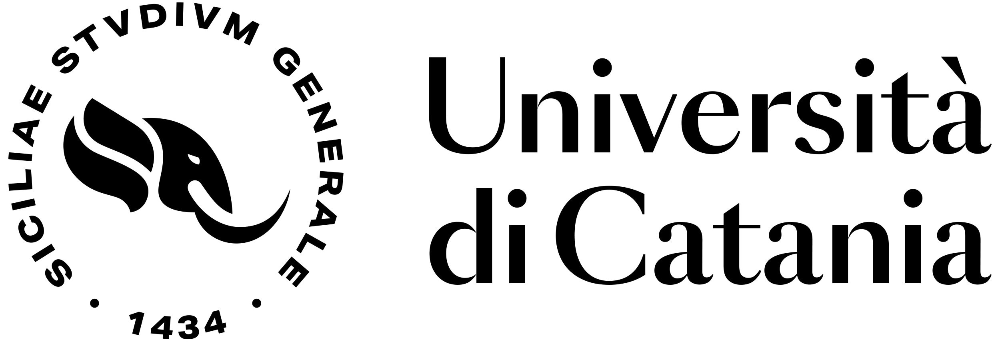

Organization

 

Open Network Intelligence for Connected and Autonomous Vehicles ONI-CAV Workshop
The ONI-CAV Workshop is supported by PNRR Project RESTART (https://www.fondazione-restart.it/), whose third plenary meeting will be also in Catania from July 4th to July 5th, 2024.
The workshop's primary objective is to provide a networking and dissemination event for providing an overview on the current state of the art on Connected and Autonomous Vehicles both from an academia and industrial point of view.
This session will include presentations from many companies working actively in the automotive arena, discussing different perspectives of the topic. A panel will also foster interactive discussion between speakers and participants/attendees.
This session will include technical talks on ADAS, radio technologies for V2X, and open platforms to simulate and test ADAS and V2X solutions.
This session will be specifically focused on drones and NTN, including also research talks on tightly related topics such as integration with 6G Networks, Search & Rescue applications, energy saving, etc.
This session will allow young researchers and PhD students involved in the RESTART framework and working on topics related to the workshop to present their ongoing activities through pitch presentations.
